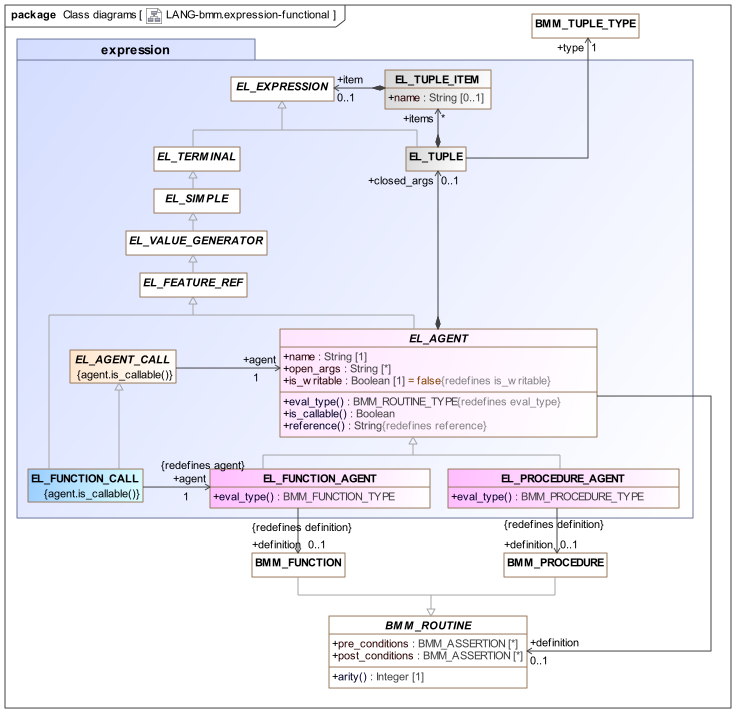
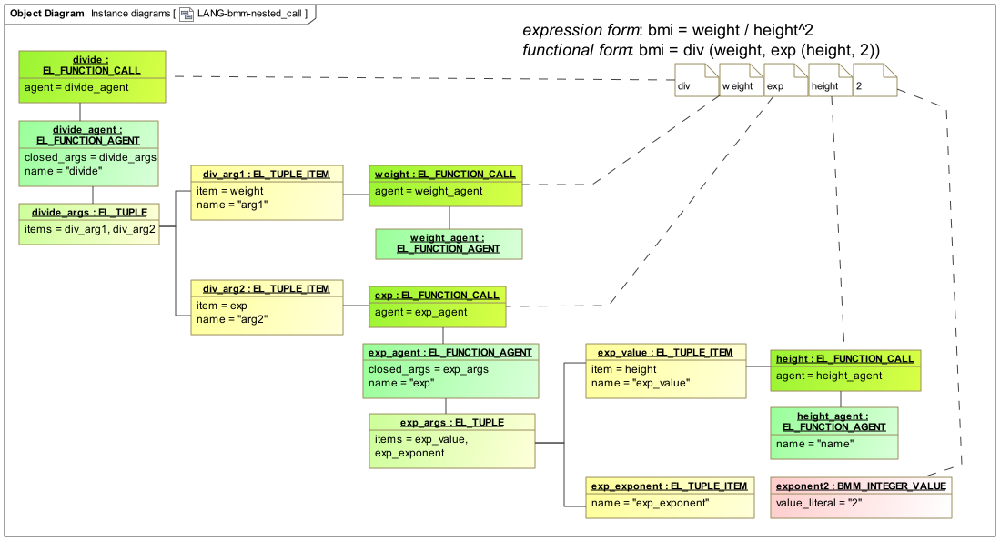

Functional Elements
Overview
BMM provides support for representing functional entities, often known as lambdas. The two key functional entities are known in the calculus as a lambda term and an application. The first is more commonly understood by programmers as a delayed routine call, here denoted by the term agent. The latter is what programmers understand as a 'call', i.e. an application of a lambda term.
An agent is formed by reference to a function or procedure in an expression context, potentially with provision of some or all arguments. This creates an entity whose type is an instance of the meta-type BMM_SIGNATURE. There are three variations as follows:
-
no arguments supplied: this is just a reference to a function or procedure by name, and is typically used to pass it as an argument to some other routine;
-
some arguments supplied: this generates a new delayed function or procedure call whose formal signature is the projection of the remaining open arguments with respect to the original signature;
-
all arguments supplied: this generates a new fully closed delayed call that may be invoked.
A call is thus an invocation of a closed agent. The evaluation type of a function call is the result type of the original function definition, thus its meta-type is just BMM_TYPE. A procedure call has no evaluation type.
Both calls and agents are special kinds of references to their original routines, and both can appear within an expression context, including as arguments passed to routine invocations. The following UML view of the bmm.expression package illustrates these details.

bmm.expression package - Functional ElementsAgents
In the model the three classes EL_AGENT, EL_FUNCTION_AGENT, and EL_PROCEDURE_AGENT (centre) define respectively, Agent and its Function and Procedure forms. An Agent is understood as one kind of terminal expression, since it is concretely a reference that generates a value, in this case, to a routine that generates a delayed call object. It potentially has closed_args, in the form of an EL_TUPLE which is a meta-type for tuple instances, which instantiate an instance BMM_TUPLE_TYPE (such as [String, Integer]). The items of the tuple are each in the form of an EL_TUPLE_ITEM consisting of the argument name (optional) and an item, which is an EL_EXPRESSION, having an eval_type of BMM_TYPE. By this means, the actual arguments to a routine call may be any expression, including operators, and (as shown), terminal expressions. This includes other agent expressions, and also function calls (but not procedure calls, since they are not value-generating entities).
An example of a delayed function call in syntax form is nodeCount (struct=?, depth=3) (the exact syntax will vary according to programming language). Here, the struct argument is left open, while the depth argument is closed with the supplied value 3. This expression generates an agent whose signature is [StructType]:Integer (assuming the concrete type of the struct argument is StructType). This capability is known as function currying and is the basis for enabling delayed routine calls to have their arguments progressively filled before final execution, each time generating a new agent with a reduced signature.
Calls
On the left of the UML diagram is the meta-class EL_FUNCTION_CALL, which represents a call to a function Agent, and which is also an EL_SIMPLE. For such a call to be possible, all arguments must be supplied (which may be none, in the case of a parameterless function).
An example of a Function Call is calculateAge ('1982-03-22', '2019-06-01'), which calculates a person’s age from his date of birth and a given date. In normal programming languages, any of the parameters may be any referenceable value-returning entity, i.e. any in-scope variable, other function call, or a valid operator expression, e.g. calculateAge ('1982-03-22', today()), where today() is a function returning the date of today.
Such calls are direct equivalents for expressions using basic mathematical operators and functions, on the usual basis that any operator (such as 'plus', i.e. +) is formally defined as a function such as add (arg1, arg2: Numeric): Numeric.
The instance structure for a typical expression such as the Body Mass Index (BMI), i.e. weight / height^2, is shown below.
